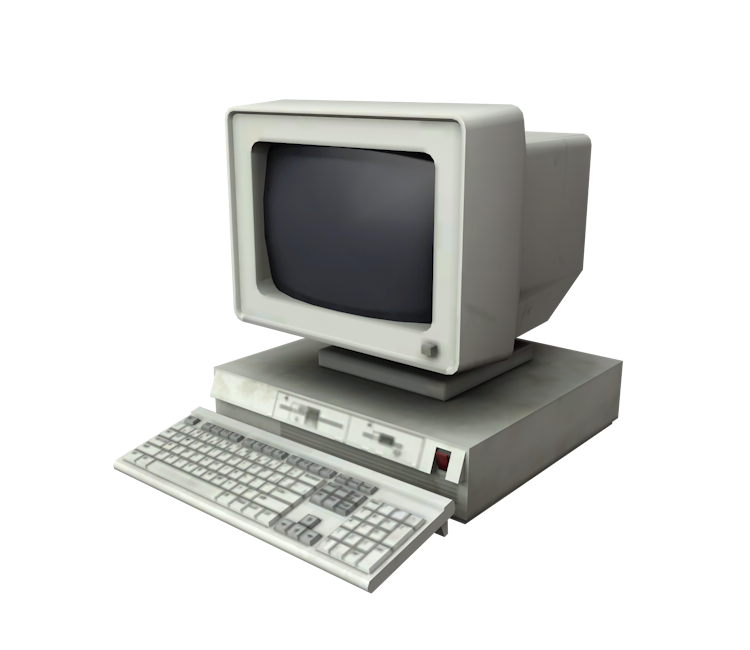

<!DOCTYPE html>
<html lang="en">
    <head>
        <title>A historia da internet - 1980</title>
    </head>
</html>
<style>
    h1{
       font-size: 100px;
       color:blue;
       font-family: 'Segoe UI', Tahoma, Geneva, Verdana, sans-serif;
       text-align: center;
       
   }
</style>
<h1>A internet em 1980</h1>
<center>
    <body></body>
    </center>
    <style>
        body{font-size: 30px;
            color: black;
            font-family:Verdana, Geneva, Tahoma, sans-serif;
            text-align: center;
            }
    </style>
    <body>
          <p>
                O conceito de uma máquina individual e para uso casual ainda en
                gatinhava na indústria. A ideia foi definitivamente reforçada com
                o lançamento do PC da IBM, em 1981. Seu estilo padrão foi copiad
                o por inúmeras empresas ao longo dos anos, praticamente padronizan
                do o formato e a composição dos computadores de mesa.
                A parceria com a Microsoft (que forneceu o sistema operacional 
                para o PC) e a concorrência com a Apple (que possuía conceitos me
                nos imitados) ditaram o ritmo de crescimento dessa nova geraç
                ão de computadores.
            </p>
            <head>
                Ascensão e queda da ARPANET
            </head>
                <p>
                    Com o passar dos anos, o número de nós e usuários da ARPANET foi crescendo e, com
                    o enfraquecimento da tensão causada pela Guerra Fria, ela 
                    perdeu parte do caráter militar. Por seu potencial, entretanto, ela foi
                    dividida em 1983 na recém-criada MILNET, que cuidaria apenas da parte bélica,
                    enquanto o que restou da ARPANET seria utilizado a partir de interesses científicos.
                </p>
    </body>
    <center>
        <a font href="anos 1990.html">anos 1990</a>
        <a font href="Trabalho.html">Voltar ao inicio</a>
    </center>